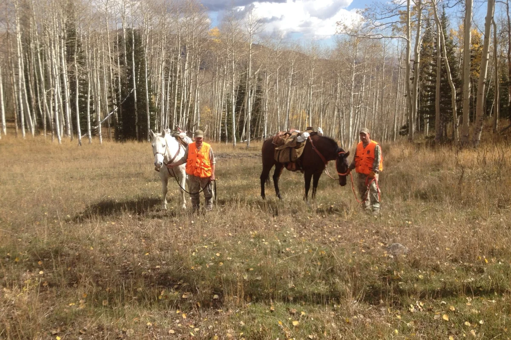

How to Choose a Backcountry Shelter
Freestanding, trekking-pole, floorless, and hot-tent tradeoffs.
Read guide →Backcountry campcraft
Better shelter, sleep, food, and organization for camps that are comfortable without becoming heavy.
Freestanding, trekking-pole, floorless, and hot-tent tradeoffs.
Read guide →Match pad insulation, bag rating, and clothing to the actual conditions.
Read guide →A simple approach to meals when weight and appetite both matter.
Read guide →
Camp System
Sleep, shelter, food, water, and organization all have one job: keep you recovered enough to hunt or fish hard the next day.
Build a Better Camp